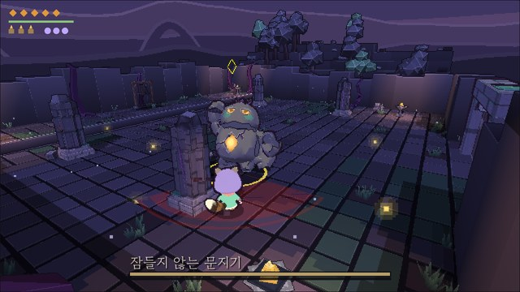

Beardworks · IT 개발
털보네공업사
한국의 1인 IT 개발사(개인사업자)입니다. 앱·웹·서버와 AI 서비스를 만들고, 그중 하나로 작고 귀여운 게임도 만듭니다. 만든 것의 소스 코드는 공개합니다.
만든 것

플레이 가능 · 웹 · Android · PC
Naïl: Under the Roots
아기 두더지 나일이 시들어 가는 큰 나무의 뿌리를 따라 땅속으로 내려가는 탑다운 액션 로그라이트. 받아치기와 박자로 싸우고, 실에 물든 이웃을 풀어 마을로 데려옵니다. 한국어 포함 11개 언어.
대화 초상화·일러스트·스프라이트는 Google Gemini 이미지 모델로 그린 원본을 도트로 옮겨 다듬은 것입니다.
Special thanks 나의 자랑스러운 아들, 나일

개발 중 · 웹 · Android 개발판
Knellroot
두건 쓴 작은 너구리 방랑자가 땅 밑 종소리를 따라 내려가는 로우폴리 3D 액션 RPG. 쿼터뷰로 떼를 쓸어 넘기다, 락온을 걸면 어깨 너머 시점으로 거대한 문지기와 일대일로 맞섭니다. Naïl과 같은 세계, 아주 먼 뒤의 이야기입니다.
방랑자·적·문지기의 3D 모델은 Google Gemini 이미지 모델로 그린 원본을 Meshy로 입체로 옮긴 뒤 줄이고 다듬은 것입니다.
Dedicated to 막내 하론이에게 바칩니다
일 맡기기
털보네공업사는 한 사람이 운영합니다. 2010년부터 소프트웨어를 만들어 온 풀스택 개발자로, 가전·에너지·유통·공공 분야의 앱과 서비스를 만들고 이끌었습니다(특허 1건, 비콘 무선통신 기반 서비스). 그 경험으로 개발 의뢰와 기술 상담을 받습니다.
- 모바일 앱 · SDKiOS·Android 앱과 다른 앱에 들어가는 SDK.
- 웹 · 서버웹 프론트엔드와 백엔드 서버, 그 사이의 API.
- LLM · AI 서비스2023년부터. RAG 검색·챗봇·에이전트, 데이터·ML 파이프라인.
- 빌드 · 배포 자동화앱·SDK·웹·서버의 CI/CD와 개발 환경 정리. 이 페이지의 게임들도 그렇게 올라갑니다.
- 기술 검토 · 자문설계·코드 검토, 기술 선택, 일정과 범위 잡기.
하고 싶은 일과 일정을 business@beardworks.io로 적어 보내 주시면, 범위와 일정을 보고 답장드립니다.
- 개발 의뢰 · 상담
- business@beardworks.io
- 게임 문의 · 지원
- support@beardworks.io
- 버그 · 의견
- GitHub Issues — Naïl · Knellroot